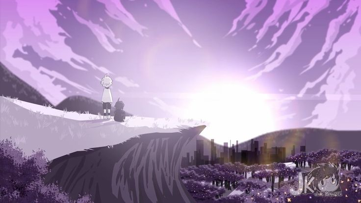

X-tale
X-tale, o universo onde nossos queridos personagens vivem, é o universo criado por X-gaster e modificado 10 vezes até conseguir a sua versão final cheio de flores amarelas e roxas com cidades enormes e também cheio de humanos e monstros vivendo juntos.

caracteristicas
- o céu é um pouco roxo
- as flores mais comuns de se encontrar são douradas e roxas